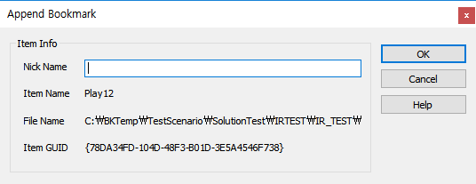
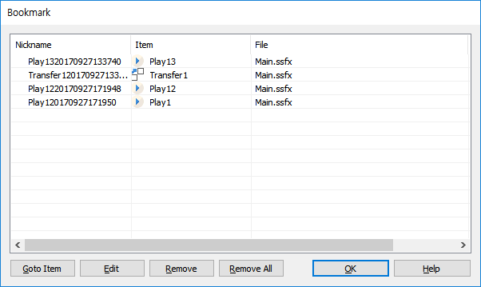

| Bookmark | 시작 다음 이전 |
아이템을 북마크에 등록하여 등록된 아이템 으로의 이동을 쉽게 합니다.
· 북마크는 아이템을 설정 하는 것이므로 아이템을 선택한 후 리본 메뉴의 Home > Bookmarks > Add / Del 메뉴를 선택하거나, 마우스 오른 버튼을 눌러 메뉴를 팝업한 후 Bookmark 메뉴 선택 또는 단축키 Ctrl + F2 를 누릅니다.

Nick Name : 북마크를 설정하려고 하면 별명 입력 창이 팝업 되는데 별명은 북마크 지정한 설명으로 사용되며, 입력 하지 않으면 아이템 이름 + 랜덤한 숫자 로 별명이 지정 됩니다.
· 북마크로 설정된 아이템은 이미지가 체크표시가 있는 이미지로 바뀝니다.
· 삭제도 아이템을 선택한 후 리본 메뉴의 Home > Bookmarks > Add / Del 메뉴를 선택하거나 , 마우스 오른 버튼을 눌러 메뉴를 팝업한 후 Bookmark 메뉴 선택 또는 단축키 Ctrl + F2 를 누릅니다.
· 모든 북마크 삭제는 리본 메뉴 Edit > Remove All 메뉴를 선택하거나, 북마크 관리창(단축키 Alt + F2)을 열어 Remove All 버튼을 누릅니다.
· 리본 메뉴 Home > Bookmarks > Next(단축키 F2), Previous(Shift + F2) 를 눌러 이동 합니다. 또는 북마크 관리창에서도 가능합니다.

· 리본메뉴 Edit > Bookmarks 메뉴를 누르거나, 단축키 Alt + F2 키를 누르면 관리창이 팝업 됩니다.
· 북마크 리스트에서 아이템을 더블 클릭 하면 해당 아이템으로 이동 합니다.
Goto Item Button : 선택한 아이템으로 이동 합니다.
Edit Button : 선택한 아이템의 별명을 편집 합니다.
Remove Button : 선택한 아이템을 북마크에서 삭제 합니다.
Remove All Button : 모든 북마크를 삭제 합니다.
|
| Copyrights(C) Bridgetec.co.kr. All Rights Reserved | 시작 다음 이전 |